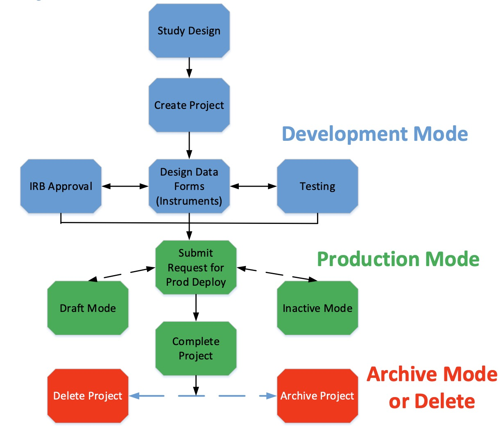

REDCap
Attention
To use your local REDCap project, you will need to set up a local REDCap instance. For this please contact your local REDCap administratior. A project name could for example be “RareLink - Your local REDCap location”.
Note
Read the REDCap Technical Overview HERE which includes remarks on Best Practices, Dependencies, Infrastrucutre Requirements, User Privileges, Authentication, Export, Interoperability, and more.
REDCap (Research Electronic Data Capture) is a web- and survey-based application designed to capture data and create databases and projects for clinical research by the Vanderbuilt University. As an open-source tool, REDCap has gained widespread adoption across university hospitals, research institutes, and other healthcare institutions due to its flexibility and cost-free availability. One of the primary advantages of REDCap is its ability to be hosted locally within the clinical information system of a hospital. This ensures that sensitive data captured through REDCap remains within the hospital’s infrastructure, enhancing data privacy and security. Although REDCap provides a highly flexible environment for data collection, it does not natively define or enforce standardized variables. This lack of native definitions for variables can lead to inconsistencies in data capture across different projects and institutions, potentially hindering data exchange and interoperability.
Tip
Read more here on how to Join & Get REDCap.
Read the REDCap FAQs.
REDCap Projects
The REDCap software and consortium support are available at no charge to non- profit organisations that join the REDCap consortium. Joining requires submission of a standard, online license aggreement. Currently the REDCap consortium has 7,531 active partners in 159 countries.
If your local institution is a member of the REDCap consortium, you need to contact your local REDCap Admin to create a project for you. Be aware, that there are projects in development and production mode:
Tip
Here you find more explanations on the figure above: A Comprehensive Guide to REDCap
Attention
The development mode is for testing purposes only - no real data should be collected! Production mode is for real data collection and should be coordinated with your local REDCap administrator. Read more HERE.
REDCap Instruments
Within REDCap, data collection is organized into instruments, which are comprised of fields that capture specific data points. Each instrument can contain multiple fields, such as text boxes, radio buttons, and dropdown menus, allowing for the collection of diverse data types. REDCap provides a wide range of field types to accommodate different data formats, including text, numeric, date, and file uploads. Additionally, REDCap supports conditional logic, enabling users to create dynamic forms that adapt based on previous responses. This feature is particularly useful for complex surveys and questionnaires, as it allows for a more personalized and streamlined data collection process.
Note
For more information on REDCap instruments, refer to the REDCap User Guide.
REDCap Data Dictionary
Based on the instruments, REDCap generates a data dictionary that defines the variables and their properties. The data dictionary serves as a reference for the project’s data structure, providing detailed information on each variable, such as its name, label, type, and validation rules. By defining variables in the data dictionary, users can ensure consistency in data collection and analysis, as well as facilitate data sharing and interoperability. The data dictionary can be exported in various formats, such as CSV or Excel, making it easy to share with collaborators or import into other systems.
Tip
For more information, check out this REDCap Data Dictionary User Guide.
REDCap API
The REDCap API is an interface that allows external applications to connect to REDCap remotely, and is used for programmatically retrieving or modifying data or settings within REDCap. This includes performing automated data imports/exports from a specified REDCap project, importing/exporting a project’s metadata (i.e. data dictionary), and events. This is even an API method for creating whole new projects. The API is a built-in feature of REDCap, so no installation is required. The REDCap API implements the use of tokens as a means of authenticating and validating all API requests that are received. Similar to the Data Import Tool in REDCap’s web interface, the API also implements data validation when the API is used for data import purposes in order to ensure that only valid data gets stored. The API provides a very efficient way to move data either to or from another system easily.
Tip
For more information on the REDCap API and activatation: REDCap API User Guide.
REDCap Ontology Services
Natively, REDCap can be considered a text-based data capture tool, as all variables and vale sets can be defined as free text. However, to enhance interoperability and data quality, REDCap can be integrated with ontology services, such as integrating the ontology server BioPortal. This allows users to define variables and value sets using standard ontologies, such as the Human Phenotype Ontology (HPO), the Logical Observation Identifiers Names and Codes (LOINC), or the Systematized Nomenclature of Medicine (SNOMEDCT).
Tip
For more information on the integration of BioPortal with REDCap, read HERE.